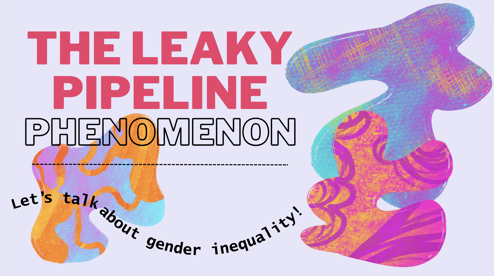

flowchart LR
A[Social conditioning eliminated] --> D(Output)
B(Gender pay equality) --> D{Output}
C(More economic opportunities for women) --> D{Output}
D --> E[Economic growth potential]
D --> F[Labour efficiency]
Leaky Pipeline Phenomenon

The Glass Ceiling and Leaky Pipeline: Let’s talk about the gender inequality in the workforce.
In the realm of Economics, where analytical prowess needs to be utilized along with the knowledge of societal dynamics, a persistent gender gap remains. Unveiling this gender gap necessitates an exploration of the leaky pipeline phenomenon, reflecting the artificial barriers hampering the ascension of women in the workforce. As we embark on this data-driven journey, the question lingers: what revelations lie beneath the surface?
We will explore these revelations as to where, why and how they occur. Are these actually related to the existing gender gap in the field of Economics?
Let’s define terms
The leaky pipeline is a phenomenon that explains why women disappear as they move up the ranks in their respective fields like a leaky pipeline. There are less number of women at the higher ranks of different fields.
Why Economics?
Although this type of gender gap/inequality exists for other fields as well, the inequality is much stronger for economics than in other social sciences. Most researchers at current do realize that women are underrepresented in STEM fields and thus, required measures are starting to be put in place. There is very slow growth for the same in economics and researchers and the general public at large are not aware of the gap in economics and how slow the change is taking place.
- The gender gap in economics also indicates some general bias in science since economics unlike other social sciences requires and relies heavily on analytical skills and mathematics and statistics.
It is important to note this gender gap because it is not only for women in the field who endure sexist policies and hostile behaviour but even government policies would be different if more women were involved in the committees who formulated them. Some famous economists even mentioned that “economics is the worst field to be a woman in.”
Hence, the field is mostly dominated by men in terms of faculty members in universities or positions in banks, etc, relative to the overall population and relative to other disciplines.
What is the number of identified positions and senior positions of women by different types of institutions in the field of Economics?
This visualization serves as the most straightforward depiction of the leaky pipeline phenomenon within Economics. Notably, senior positions represent a disproportionately small fraction of the total identified positions held by women across diverse institutions in the field. This contrast highlights a concerning trend: as one ascends the professional hierarchy, the representation of women diminishes significantly in senior positions.
Do higher-ranked institutions hire less women?
Higher-ranked institutions may exhibit a lower propensity to hire women, influenced by the demanding expectations associated with maintaining a robust publication record. This, coupled with the challenges of parenthood, could lead to the attrition of women from these institutions. The stakes are relatively lower at the entry level, where both male and female graduates are presumed to possess comparable research potential.
So, let’s explore two expectations to understand if the difference in the share of women at entry and senior levels in the USA is because of the higher number of top-ranked institutions. If Expectation 2 is true, we need to delve deeper into the reasons behind it.
Expectation 1: Higher-ranked institutions hire women at a comparable rate to lower-ranked institutions across all levels of seniority.
Expectation 2: Higher-ranked institutions hire fewer women at the senior level than at the entry level, especially when contrasted with their lower-ranked counterparts.
The kernel density plots above illustrate a discernible difference in the percentage of women across all levels. At the entry level, the plot exhibits a broader distribution compared to “All positions” or “Senior level.” The peak of the plot for both rank groups aligns at almost the same percentage of women on the x-axis. Conversely, at the Senior level, the density plot peak for the top 119 rank group shifts more towards the left, indicating a lower percentage of women compared to lower-ranked institutions. This means that higher ranked institutions hire less women at the senior level.
Notice: there is a general reduction in spread in both plots at the senior level, underscoring a diminished share of women in both types of institutions and further emphasizing the presence of a leaky pipeline.
Hence, our Expectation 2 turns out to be true. Let’s continue to explore further.
Overall story
Let’s go back to the start- our question- where, why and how they occur. Are these actually related to the existing gender gap in the field of Economics?
- Where: Starkly in USA+Canada regions
- Why: Ranking effects because of expectation 2 being true. More top-ranked institutions in the above regions. - How: Societal and institutional barriers. Economics sees a stronger correlation with the overall gender gap index for senior level.
- Actually related to the existing gender gap in the field of Economics since the correlation 1) is greater for senior level than entry level 2) the gender gap index ranks are based on existing gender gap indices of the respective regions
In Economics, the gender gap, exemplified by the leaky pipeline, persists, driven by societal biases and institutional barriers.
Data from 1995 to 2014 shows minimal progress, urging a closer examination of the glass ceiling inhibiting women’s advancement. The stark contrast in women’s representation at entry and senior levels, especially in the United States and Canada, prompts exploration of cultural and policy dynamics. Higher-ranked institutions hiring fewer women at senior levels raises questions about academic expectations. Linking these insights to the Global Gender Gap Index emphasizes the correlation between gender inequality and women’s underrepresentation in senior positions. This narrative will conclude with a call to action for economic growth through gender equality, stressing the need to repair the leaky pipeline.
The overarching flowchart presents a roadmap toward eliminating social conditioning, achieving gender pay equality, providing more economic opportunities for women, enhancing labor efficiency, and ultimately contributing to economic growth. McKinsey & Company’s report projects a potential $12 trillion addition to global GDP by 2025 through advancing women’s equality—a testament to the untapped potential awaiting recognition and utilization in the workforce.
Economic Growth Potential:
According to a report by McKinsey & Company, advancing women’s equality and reducing the gender gap in the workplace could add $12 trillion to global GDP by 2025. There is a lot of potential in women who are getting educated and shifting to the workfield- it is important to recognize and utilize the potential to add to the labor productivity in the economy.
Labor Market Efficiency:
According to the World Economic Forum’s Global Gender Gap Report 2020, reducing gender disparity in the workplace can improve labor market efficiency, contributing to economic growth. This means that workers should be allocated based on skills, qualifications and merit rather than gender/sex, resulting in more optimum use of human resources. This efficiency will then translate into greater productivity and economic growth, because companies and industries will operate at their full potential.
Reducing Income Inequality:
The gender pay gap remains a significant issue in all fields. In the United States, women earned about only 82 cents for each dollar earned by men in the year of 2020, according to the U.S. Bureau of Labor Statistics. The glass ceiling and leaky pipeline phenomenon often contribute to this gender wage gap. By addressing these two issues, we can actually work to reduce income inequality. By not holding women back in their careers due to social conditioning, by systemic changes in mindset, they can progress to higher-paying roles and it will have a direct impact on narrowing the gender pay gap.
In addressing the glass ceiling and plugging the leaky pipeline, not only do we pave the way for more equitable workplaces, but we also contribute to reducing income inequality and improving labor market efficiency. The journey through the data underscores the significance of systemic changes, emphasizing the need to recognize and harness the potential within women to maximize labor productivity and foster a more inclusive, prosperous economic future.